武蔵野大学データサイエンス学部
武蔵野大学国際データサイエンス学部（通信教育部）
中村 亮太
今日は「座標＝データ」を、動かして・見る回。まず for 文でスフィアを並べる復習から始め、次に x・y座標のリストを読み込んで1つのスフィアをアニメーションで動かす。そしてサッカーの位置データ（CSV）を pandas で読んで中身を確かめ、A-Frameで選手22人＋ボールの計23個とフィールドを再現し、実データでアニメーションさせる。1つずつ課題を進めながら、最後は自由創作の発展課題へ。
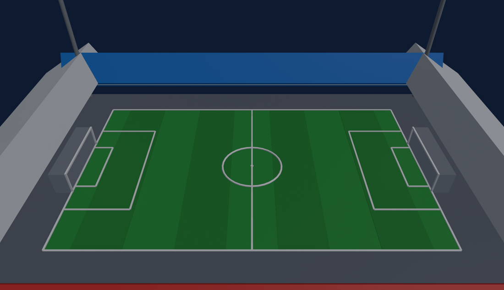
テーマは引き続き 「バーチャル空間で、データサイエンスを実践する」。第3回は、これまで「置くだけ」だった座標 x・y・z を、時間とともに変化するデータとして読み込み、空間の中で動かして可視化する。
{x, y}＝ある瞬間のデータ1件（第2回で学んだオブジェクト＝レコード）0, 1, 2… と順番に切りかえる＝時系列データの「再生」＝アニメーション今日は2つの言語を、それぞれの得意分野に合わせて使い分ける。これはデータサイエンスの実務でもよくある組み合わせ。
| 言語 | 今日の役割 | 得意なこと |
|---|---|---|
| JavaScript (A-Frame / ブラウザ) | 3D空間を作り、図形を動かして見せる | ブラウザ上の表示・アニメーション・操作（インタラクション）。可視化のフロント側 |
| Python (pandas) | CSVを読み込み・中身を確認・集計 | 表データの処理・分析。統計・機械学習まで豊富なライブラリ |
本科目全体の流れ（再確認）。第3回は STEP 1（舞台づくり）の力を使って、STEP 2（データを取る・扱う）に本格的に踏み込み、pandasにも初めて触れる回。
const/let・DOM操作（createElement・setAttribute・appendChild）を復習し、for文でスフィアを並べられるsetIntervalで1つのスフィアをアニメーションさせられるhead()・shapeなどでデータの中身を確認できるindex.html と soccer.csv（または soccer_25fps.csv）を同じ場所に置くCSVの列（標準スキーマ）: frame（コマ番号）, team（ball/home/away）, id（背番号・ボールは0）, x, y（フィールド座標[m]・中心が原点／ピッチ 105m×68m）
数値化の設定（サンプリング）: フレームレート 1 fps（1秒あたり1コマ）。連番 frame（0〜5399）がそのまま秒数（5400秒＝90分）を表す。座標はメートル単位で、ピッチ中央が原点 (0, 0)、横 x＝−52.5〜+52.5、縦 y＝−34〜+34（＝105m×68m）。値は小数第1位まで。※実試合の記録ではなく、教材用に数式で生成した合成サンプル（本物のトラッキングは約25 fps）。
フル版（soccer_25fps.csv）: 動きは同じだが 1コマ＝1/25秒で frame が 0〜134999（＝135,000コマ）。列の並びは soccer.csv と完全に同じなので、コードはそのまま使える。実時間で再生したいときは setInterval の間隔を 40（＝1000÷25）ミリ秒にする（std3-5）。
プロサッカーの世界では、試合中の全選手とボールの位置を、カメラやセンサーで毎秒何十回も記録したトラッキングデータが、実際に戦術分析に使われている。その代表例が、スポーツ分析企業 Metrica Sports が研究・教育向けに無償公開しているサンプルデータ。Kaggle でも配布されている。
▶ Kaggle: Metrica Sports Football Tracking Data
x, y 座標が延々と並ぶ巨大なCSV（本物は数十万行）soccer.csv とまったく同じ。今日学ぶ読み方・動かし方が、そのまま本物にも通用する授業で扱いやすいよう、上のような実データ（Metrica Sports）の形式（列・単位・23個という構成）をまねて、数式で生成した簡易版を使っている（実試合の記録そのものではない）。まず小さく仕組みを覚え、興味が出たら本物のデータ（Kaggle）に挑戦してほしい。列名や単位は本物では少し違うので、pandas で head() して形を確かめてから使うのがコツ。
ノート: Notionに記録する項目（提出前に確認）
以下の項目を1つのNotionページに記録し、PDF化して提出します。テンプレートは配りません。構成は自分で考えること。
| セクション | 記録する内容 | リンク | |
|---|---|---|---|
| 標準課題 std3-1 / std3-2 | for文でスフィアを並べる／座標リストで1つ動かす ─ 各コードと実行スクショ | 移動 | |
| ノート pandas | std3-3の出力（head・shape・件数）＋穴埋め | 移動 | |
| 標準課題 std3-4 / std3-5 | 23個＋フィールドの配置／CSVでアニメーション ─ 各コードと実行スクショ | 移動 | |
| ノート ふりかえり | 「1コマ＝1件のデータ」「コマ送り＝時系列の再生」を自分の言葉で1〜2行 | 移動 | |
| 発展課題 adv3-1 | 装飾・可視化の自由創作のコードとスクショ＋工夫（任意） | 移動 |
※ 発展課題（adv3-1）は任意。ほかはすべて記録が必要です。
<a-sphere> を置く、for文で量産const/let・配列・関数・document.createElement などのDOM操作document.createElement('a-sphere')図形.setAttribute('属性', 値)（位置・色・大きさ）group.appendChild(図形) で空間に追加JavaScriptで図形を出すときに毎回使う4つ。「場所を探す → 作る → 設定する → 入れる」の順で使う。この表は今日ずっと手元に置いておくとよい。
| 命令 | 何をするか（機能） | 書き方（使い方） | 具体例 |
|---|---|---|---|
querySelector |
すでにある要素を1つ探して取ってくる（新しくは作らない） | 親.querySelector('セレクタ') |
document.querySelector('#group')→ id="group" の要素を取得 |
createElement |
新しい要素（タグ）を1つ作る。この時点ではまだ画面に出ない | document.createElement('タグ名') |
document.createElement('a-sphere')→ 中身が空の a-sphere が1つできる |
setAttribute |
要素に属性（設定）を与える／書きかえる（位置・色・大きさなど） | 要素.setAttribute('属性名', 値) |
ball.setAttribute('color', 'gold')→ その球を金色にする |
appendChild |
作った要素を親の中に入れる。ここで初めて画面に出る | 親.appendChild(要素) |
group.appendChild(ball)→ #group の中に球が追加され表示される |
querySelector に渡す文字）：'#group'＝id、'.box'＝class、'a-sphere'＝タグ名。CSSと同じ書き方createElement で作っただけでは見えず、appendChild で入れて初めて表示される（「作る」と「置く」は別の作業）querySelector で入れ物を得る → createElement で作る → setAttribute で設定 → appendChild で入れるquerySelector＝盛りつける皿を用意する／createElement＝料理を1品作る／setAttribute＝味つけ・盛りつけ／appendChild＝皿にのせて食卓に出す。<script> を書く場所にこだわるA-FrameのHTMLは、大きく2つの部分に分けて考えると迷わない。
<a-scene> の中のタグ（a-sky・a-plane・a-entity）。「何を置くか」を書く<script> の中のJavaScript。「どう作るか・動かすか」を書く<script> は </a-scene> の後、</body> の直前に書く
HTML <body> <!-- ① デザイン：何を置くか（先に書く） --> <a-scene> <a-sky ...></a-sky> <a-entity id="group"></a-entity> </a-scene> <!-- ② ロジック：どう作る・動かすか（デザインの後に書く） --> <script> const group = document.querySelector('#group'); // ← 上の #group を探す // ... 図形を作る処理 ... </script> </body>
<script> を先に書くと、まだ <a-entity id="group"> が作られていないdocument.querySelector('#group') を呼ぶと見つからず（null）エラーになる<script> は <body> の外に書けばいいのでは？」という疑問<script> を正しく置ける場所は <head> の中か <body> の中のどちらかだけ。</body> や </html> より後ろに書くのはHTMLの仕様上は不正</body> の後ろに書いても実際には実行されることが多い。ここは「body 内に移動して DOM が書きかわる」のではなく、パーサがそう解釈してくれるだけ、というのが正確（動的にHTMLを読み込む場合や XML/XHTML として解析される場合は、期待どおり動かないこともある）<body> の外に出すメリットは無いので、素直に body 内に置けばよい<head> に置くと、まだ図形の要素が作られていないうちに実行され、querySelector('#group') が null になってエラー。だから head でもダメ</a-scene> の後、</body> の直前に置くのが、いちばん確実でシンプル。第1回・第2回の資料もすべてこの形<head> に置きたいときは、外部ファイルに <script defer src="..."> を付けるか、DOMContentLoaded の完了を待つ書き方が必要。今は body 末尾でOK個数を const で決め、for 文でその数だけスフィアを横に並べる。index.html として保存 → ブラウザで開く。
土台HTML（★の部分だけ空欄）
HTML <!DOCTYPE html> <html> <head> <script src="https://aframe.io/releases/1.7.1/aframe.min.js"></script> </head> <body> <a-scene> <a-sky color="#111"></a-sky> <a-plane rotation="-90 0 0" width="30" height="30" color="#1a1a1a"></a-plane> <a-entity id="group"></a-entity> </a-scene> <script> const group = document.querySelector('#group'); // 図形を入れる場所 const N = 10; // 出す個数（const=変えない値） for (let i = 0; i < ____; i++) { // ★空欄1: N 回くりかえす★ const ball = document.createElement('a-sphere'); // ① 作る ball.setAttribute('position', `${i - 4.5} 1.5 -5`); // ② 位置（横に並べる） ball.setAttribute('radius', 0.4); ball.setAttribute('color', ____); // ★空欄2: 好きな色（文字列）★ group.appendChild(ball); // ③ 空間に追加 } </script> </body> </html>
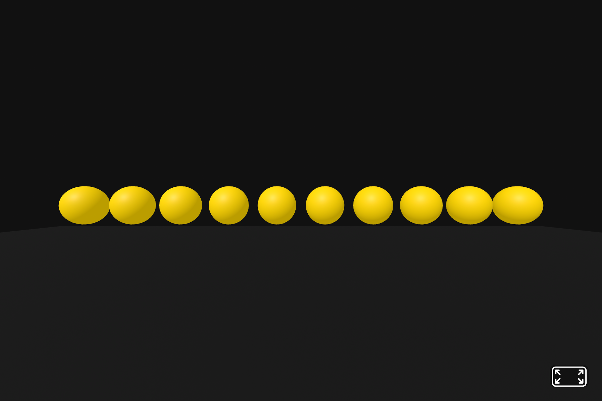
▲ 実行結果（Webブラウザ）：空欄を埋めて開くと、金色のスフィアが横に10個ならぶ
N 回くりかえすための条件。for の真ん中は「いつまで続けるか」。i と N をどう比べる？# 始まりの16進でもOK（自由に選ぶ）N を 5 や 20 に変えて、個数が変わることを確認するJavaScript const group = document.querySelector('#group'); const N = 10; for (let i = 0; i < N; i++) { const ball = document.createElement('a-sphere'); ball.setAttribute('position', `${i - 4.5} 1.5 -5`); ball.setAttribute('radius', 0.4); ball.setAttribute('color', 'gold'); group.appendChild(ball); }
空欄1＝N、空欄2＝'gold'。i - 4.5 で中央そろえ（i=0→-4.5, i=9→4.5）。金色の球が10個ならぶ。
std3-1 で書いた「for文で複数オブジェクトを並べるコード」を、人に説明できるかを確かめるワーク。コードは「動かせる」だけでなく「なぜそう動くか言葉にできる」ようになると本物。
a-box を for文で10個配置したい」。コードの流れを最初から最後まで順番に説明して。for (let i = 0; i < N; i++) の i++ は何をしている？ もし書き忘れたら何が起きる？createElement と appendChild の役割の違いは？ どちらか片方だけだとどうなる？`${i - 4.5} 1.5 -5` の i - 4.5 は何のため？ i=0 と i=9 の箱はそれぞれどこに来る？N を 10 から 20 に変えると何が起きる？ なぜ？a-sphere）ではなく a-box にするには、どの行をどう書きかえる？i を使う）querySelector('#group') で、箱を入れる場所を取ってくる。const N = 10 で個数を決める（あとで変えたい値）。for (let i = 0; i < N; i++) で10回くりかえす（i は 0,1,2…9）。createElement('a-box') で箱を1個つくる。setAttribute で position や color を設定。位置は i を使って1個ずつ横にずらす。appendChild で空間（group）に追加する。「つくる（createElement）→設定する（setAttribute）→追加する（appendChild）」の3ステップを i を変えながら10回くりかえす、と言えていれば◎。a-sphere を a-box にするだけで箱になる点も押さえられると完璧。
[[x, y], [x, y], …] を用意する（各要素＝あるコマの位置）setInterval で一定時間ごとに次のコマへ進め、スフィアの position を書きかえる「◯ミリ秒ごとに、この処理をして」を登録する命令。アニメーションの心臓部。
JavaScript let i = 0; setInterval(function () { // 300ミリ秒ごとに動く console.log(i); i = i + 1; }, 300); // ← この 300 が「間隔（ミリ秒）」。小さいほど速い
300＝間隔（ミリ秒）。100 にすると3倍速く動くi を1増やして、次のコマに進めるのがコツsetInterval(function () { … }, 300) は、じつは少し省略した書き方。まずは省略せず、2ステップに分けて書いてみると分かりやすい。
① 平たい書き方（関数に名前をつけて、別々に書く）
JavaScript let i = 0; // (1) くりかえす中身を、名前つきの関数として先に作っておく function tick() { console.log(i); i = i + 1; } // (2) その関数を setInterval に「渡す」。300ミリ秒ごとに tick が呼ばれる setInterval(tick, 300); // ← tick だけ書く（tick() と書くと「今すぐ1回呼んだ結果」を渡してしまうのでNG）
② 省略した書き方（名前をつけず、その場に直接書く＝上の例）
JavaScript let i = 0; setInterval(function () { // ← tick の中身を、名前をつけずここへ直接書いた（無名関数） console.log(i); i = i + 1; }, 300);
setInterval に渡すのは「関数そのもの（＝あとで実行してほしい処理のかたまり）」だということ。①の tick（名前）も、②の function () {…}（中身そのもの）も、渡しているのは同じ「関数」実際にコンソールで確かめる完成HTML
下を count.html などで保存 → ブラウザで開く → 右クリック →「検証」→「Console」を見ると、0, 1, 2… と増えていく。
HTML <!DOCTYPE html> <html> <body> <script> let i = 0; setInterval(function () { // 300ミリ秒ごとに動く console.log(i); i = i + 1; }, 300); </script> </body> </html>
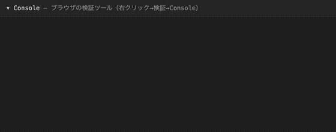
▲ 実行結果（アニメGIF・ブラウザのConsole）：300ミリ秒ごとに 0, 1, 2, 3… と増えていく
points というリストに沿って、1つのスフィアを動かす。各要素は [x, z]（横位置・奥行き）。setInterval で次々に位置を書きかえる。
土台HTML（★の部分だけ空欄）
HTML <!DOCTYPE html> <html> <head> <script src="https://aframe.io/releases/1.7.1/aframe.min.js"></script> </head> <body> <a-scene> <a-sky color="#111"></a-sky> <a-plane rotation="-90 0 0" width="30" height="30" color="#1a1a1a"></a-plane> <a-sphere id="ball" radius="0.4" color="tomato"></a-sphere> </a-scene> <script> const ball = document.querySelector('#ball'); // 座標のリスト（各要素 = [x, z] = 横位置・奥行き） const points = [ [-4, -6], [-2, -5], [0, -6], [2, -7], [4, -6], [2, -5], [0, -4], [-2, -5] ]; let i = 0; setInterval(function () { const p = points[i % points.length]; // 今のコマの [x, z]（リストを循環） const x = p[0]; const z = p[1]; ball.setAttribute('position', ____); // ★空欄1: `${x} 1 ${z}` の形で位置を書きかえ★ i = ____; // ★空欄2: 次のコマへ（i を1増やす）★ }, 300); </script> </body> </html>
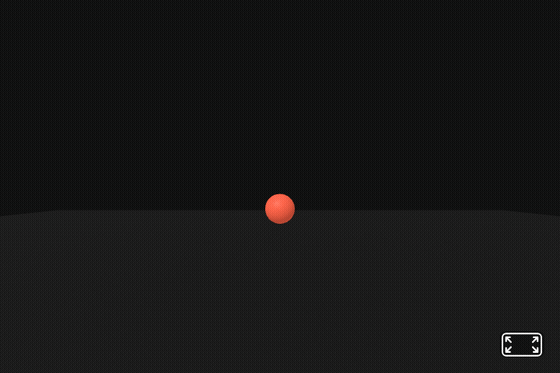
▲ 実行結果（アニメGIF）：赤い球が points の座標を順番にたどって動く
position に「x 高さ z」の3つの数を渡す。x・z は変数から、高さは 1 に固定。テンプレート文字列（`...` と ${ }）を使うと組み立てやすいi を1つ増やすには？（この章の setInterval の例と同じやり方）points に自分で座標を足す／300 を 100 にして速くしてみるJavaScript const ball = document.querySelector('#ball'); const points = [[-4,-6],[-2,-5],[0,-6],[2,-7],[4,-6],[2,-5],[0,-4],[-2,-5]]; let i = 0; setInterval(function () { const p = points[i % points.length]; const x = p[0], z = p[1]; ball.setAttribute('position', `${x} 1 ${z}`); i = i + 1; }, 300);
空欄1＝`${x} 1 ${z}`、空欄2＝i + 1。赤い球がリストの座標をたどって動き続ける。
points は「1つの点が動いた記録＝軌跡データ」。この後は、この points がCSVから読み込んだ実データに変わり、点が23個に増えるだけ。仕組みはまったく同じ。
frame・team・id・x・y）df['x']）1行が「あるコマの、ある選手/ボール1つ」の位置。列が項目。左端には自動で index（行番号）が付く。
| index | frame | team | id | x | y |
|---|---|---|---|---|---|
| 0 | 0 | ball | 0 | 0.0 | 19.3 |
| 1 | 0 | home | 1 | -45.7 | 2.2 |
| 2 | 0 | home | 2 | -28.6 | -21.9 |
| … | … | … | … | … | … |
| 124199 | 5399 | away | 11 | -6.2 | 8.1 |
※ 列＝df['team'] のように取り出す（Series）。行＝条件で抽出（df[df['frame']==0]）。この「行と列」の考え方が pandas の基本。
これまでの授業で py5 を入れたときとまったく同じ流れ。作業フォルダを作り、仮想環境（.venv）を作って、その中に pandas を入れる。py5 の部分が pandas に変わるだけ。（インストール不要で試すなら Google Colab → 下の囲み）
① 作業フォルダを作って移動する
Terminal mkdir soccer cd soccer
② 仮想環境（.venv）を作る
Terminal uv venv
③ 仮想環境を有効化する（プロンプトの先頭に (.venv) が出れば成功）
Terminal source .venv/bin/activate # Mac / Linux # .venv\Scripts\activate # Windows の場合
④ pandas をインストールする（py5 のときと同じ uv pip install）
Terminal uv pip install pandas
⑤ 分析スクリプト（例 bunseki.py）を実行する
Terminal python bunseki.py
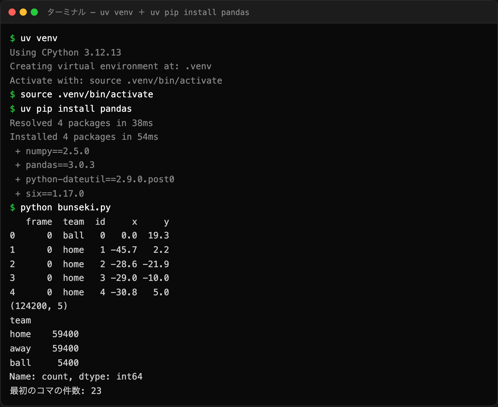
▲ 実行結果（ターミナル）：uv venv → uv pip install pandas（pandas が入る）→ python bunseki.py でデータの中身が表示される
| コマンド | 意味 |
|---|---|
uv venv | 仮想環境（.venv）を作る |
source .venv/bin/activate | 仮想環境を有効化（Winは .venv\Scripts\activate） |
uv pip install pandas | pandas をインストール（pip install の頭に uv） |
uv pip list | インストール済み一覧（pandas が入ったか確認） |
deactivate | 仮想環境を抜ける（(.venv) が消える） |
curl -LsSf https://astral.sh/uv/install.sh | sh（Mac/Linux）で入れる.venv/bin/python を選ぶbunseki.py と soccer.csv は同じフォルダ（soccer/）に置く。別の場所だと read_csv('soccer.csv') が見つからずエラーcolab.research.google.com を開く → 「ノートブックを新規作成」soccer.csv をアップロードdf は pd.read_csv(...) で読み込んだ DataFrame とする。まずはこの表の操作を覚えれば十分。
| 書き方 | 意味 |
|---|---|
pd.read_csv('soccer.csv') | CSVを読み込んで DataFrame にする |
df.head(n) / df.tail(n) | 先頭 / 末尾の n 行（省略で5行） |
df.shape | (行数, 列数) を返す |
df.columns | 列名の一覧 |
df.dtypes | 各列のデータ型（数値か文字か） |
df.info() | 列・型・件数などのまとめ |
df.describe() | 数値列の統計（平均・最小・最大・四分位など） |
df['x'] | x列だけ取り出す（Series） |
df[df['frame'] == 0] | 条件で行を抽出（frameが0の行だけ） |
df['team'].value_counts() | 値ごとの件数を数える |
df['x'].mean() | 平均（他に .min() .max() .sum()） |
※ describe() や mean() は、後の回で学ぶ統計の入口。今日は「こんなことができる」と知っておくだけでOK。
次のコードを上から順に実行し、出力を読む。何行・何列で、どんな値が入っているかを自分の目で確かめる。
部品（空欄は2か所）
Python import pandas as pd # CSVを読み込む（同じフォルダに soccer.csv がある前提） df = pd.read_csv('soccer.csv') # ① 先頭5行を見る print(df.____()) # ★空欄1: 先頭数行を表示するメソッド★ # ② 行数・列数（形）を見る print(df.shape) # → (124200, 5) のように (行数, 列数) # ③ 列の名前を見る print(df.columns.tolist()) # → ['frame', 'team', 'id', 'x', 'y'] # ④ team ごとの件数を見る print(df['team'].value_counts()) # ball / home / away が何件ずつか # ⑤ 最初のコマ(frame == 0)だけを取り出す → 23件のはず first = df[df['frame'] == ____] # ★空欄2: 最初のコマ番号★ print(first) print('最初のコマの件数:', len(first))
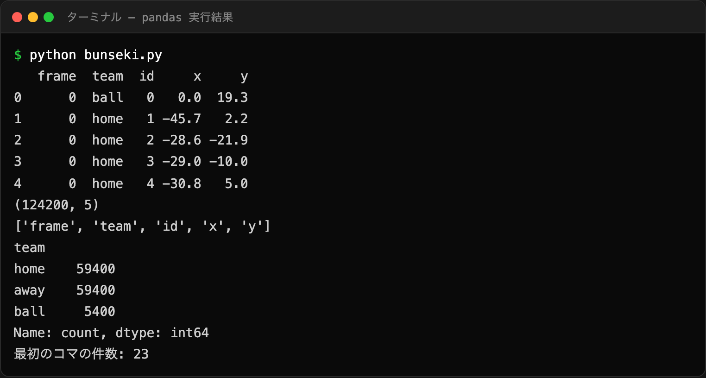
▲ 実行結果（ターミナル）：空欄を埋めて実行した実際の出力。行数(124200, 5)・件数23 などが確認できる
tail、では先頭は？）frame は何番から始まる？ 取り出した件数が23になれば正解（選手22＋ボール1）df[df['team'] == 'ball'] でボールだけ取り出し、x・y がどう動くか眺めるPython import pandas as pd df = pd.read_csv('soccer.csv') print(df.head()) print(df.shape) # (124200, 5) print(df.columns.tolist()) print(df['team'].value_counts()) # home 59400 / away 59400 / ball 5400 first = df[df['frame'] == 0] print(len(first)) # 23
空欄1＝head、空欄2＝0。全124,200行＝5400コマ×23個。各コマに必ず23件（選手22＋ボール1）ある。
pd.（ ）('soccer.csv') である。df.（ ）()、行数・列数は df.（ ）である。fetch（ファイル読み込み）は、HTMLファイルをダブルクリックで直接開く（file://）と動きません。作業フォルダで簡易サーバを立ててから開きます（soccer.csv と index.html を同じフォルダに置くこと）。
Terminal
# 作業フォルダに移動して、次を実行（Pythonが入っていればOK）
python -m http.server 8000
→ ブラウザで http://localhost:8000/index.html を開く。（VS Codeの「Live Server」拡張でもOK）
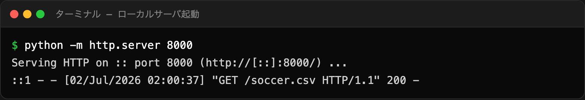
▲ 実行結果（ターミナル）：Serving HTTP on … port 8000 と出れば起動成功。以降ブラウザからアクセスできる
CSVの座標はフィールドの実寸（105m×68m）。そのままだと大きすぎるので、1/5に縮小し、少し奥（-14）へずらして配置する。高さ y は地面すれすれの 0.6 で固定。
JavaScript const SCALE = 0.2; // 1/5に縮小 const ZOFF = -14; // 全体を奥へずらす // フィールドの (x, y) を、A-Frameの位置に変換して図形に設定する function place(el, x, y) { const sx = x * SCALE; const sz = -y * SCALE + ZOFF; // フィールドのy → 奥行き(z)へ el.setAttribute('position', `${sx} 0.6 ${sz}`); }
position の x・y・z の考え方の応用。上から見おろすと、フィールドの平面がそのまま見えるasync / await」std3-4のコードには async function loadCSV(...) と await が出てくる。少し新しい書き方なので、ここだけ説明する（意味が分かればOK。まずは丸ごとコピーして使ってよい）。
fetch（ファイルを読む）は「時間がかかる処理」。押した瞬間には終わらず、データが届くまで少し待つ必要があるawait＝「この処理が終わるまで待ってから次に進む」という命令。待って、届いたデータを受け取るawait は async を付けた関数の中でしか使えない約束。だから loadCSV の頭に async を付けるawait せずにまだできていないのに食べようとすると、中身が空っぽで失敗する（＝データが届く前に使おうとしてエラー）。CSVを読む関数の全体（むずかしい書き方は使わず、for 文と if だけで書く）
やることはたった2段階。①ファイルを文字として受け取る（ここだけ await）→ ②その文字を for 文で1行ずつ「データの箱」に詰めかえる。②は第1回・第2回で習った for と同じ。
JavaScript async function loadCSV(url) { // ← awaitを使うので async を付ける const res = await fetch(url); // ① ファイルを取りに行く（届くまで待つ） const text = await res.text(); // ② 中身を1つの長い文字にして受け取る（受け取るまで待つ） const lines = text.trim().split('\n'); // ③ 改行(\n)で「1行ずつ」に分ける const rows = []; // ④ 詰めかえ先の空っぽの配列 for (let i = 1; i < lines.length; i++) { // i=1 から：1行目(見出し frame,team,…)は飛ばす const c = lines[i].split(','); // カンマで5つの値に分ける → c[0]…c[4] const row = { // 5つの値を「名前つきの箱」にまとめる frame: Number(c[0]), // Number(...) は「文字→数値」に直す（"0"→0） team: c[1], // team は文字のまま（'home'など） id: Number(c[2]), x: Number(c[3]), y: Number(c[4]) }; rows.push(row); // 配列のうしろに1件ずつ足していく } return rows; // ⑤ 「行データの箱」を集めた配列を返す } loadCSV('soccer.csv').then(function (rows) { // 読み終わったら、then の中が実行される // ここで rows（読み込んだデータの配列）を使う });
split('\n')＝改行で切る→行の配列。split(',')＝カンマで切る→列（値）の配列。文字を切り分ける命令Number('19.3')＝文字を数値に直す。CSVから読むと最初は全部「文字」なので、計算に使う x・y は数値へ直すrows.push(row)＝配列のうしろに1件足す。for で124,200回くりかえすと、全データが rows にそろう.then(function (rows) { ... })＝「読み終わったら、この中を実行して」。時間がかかる loadCSV の結果は、ここで受け取る（await と同じ「待つ」仲間）fetch と text() の2か所だけ（await）。あとは知っている for と if だけで書けるloadCSV の中で起きていることを、1行分だけ追いかけた図。切って → 数値に直して → 名前をつける、それだけ。text.split('\n') ＝ 改行で切るi=1 から始めて飛ばす）lines[1].split(',') ＝ カンマで切るNumber(...) で数値に直すsoccer.csv を読み込み、最初のコマ（frame 0）の23個を、チームごとに色分けして配置する。薄い緑の a-box をフィールドとして敷く。
完成HTML（index.html として保存 → サーバ経由で開く・空欄は2か所）
HTML <!DOCTYPE html> <html> <head> <script src="https://aframe.io/releases/1.7.1/aframe.min.js"></script> </head> <body> <a-scene> <a-sky color="#223"></a-sky> <!-- フィールド：薄い緑の a-box（105×68 を 1/5 に縮小） --> <a-box position="0 0 -14" width="21" height="0.1" depth="13.6" color="#2e7d32"></a-box> <a-entity id="group"></a-entity> <!-- 上から見おろすカメラ --> <a-entity position="0 10 4" rotation="-55 0 0"><a-camera></a-camera></a-entity> </a-scene> <script> const group = document.querySelector('#group'); const SCALE = 0.2, ZOFF = -14; function place(el, x, y) { el.setAttribute('position', `${x * SCALE} 0.6 ${-y * SCALE + ZOFF}`); } // チームごとの色 function colorOf(team) { if (team === 'home') return '#2196f3'; // 青 if (team === 'away') return '#f44336'; // 赤 return 'white'; // ボール } // CSVを読み込んで、1行=1オブジェクトの配列にする（for文だけで書く） async function loadCSV(url) { const res = await fetch(url); // ファイルを取りに行く（届くまで待つ） const text = await res.text(); // 中身を文字として受け取る（待つ） const lines = text.trim().split('\n'); // 改行で1行ずつに分ける const rows = []; for (let i = 1; i < lines.length; i++) { // 1行目(見出し)は飛ばして2行目から const c = lines[i].split(','); // カンマで5つの値に分ける rows.push({ frame: Number(c[0]), team: c[1], id: Number(c[2]), x: Number(c[3]), y: Number(c[4]) }); } return rows; } loadCSV('soccer.csv').then(function (rows) { // 最初のコマ(frame === 0)だけ取り出す → 23件（for文とifで選ぶ） const first = []; for (let i = 0; i < rows.length; i++) { if (rows[i].frame === ____) { // ★空欄1: 最初のコマ番号★ first.push(rows[i]); } } // 23件を1件ずつ球にして置く for (let i = 0; i < first.length; i++) { const r = first[i]; const el = document.createElement('a-sphere'); let radius = 0.35; // 選手は 0.35 if (r.team === 'ball') { radius = 0.2; } // ボールだけ小さく el.setAttribute('radius', radius); el.setAttribute('color', colorOf(r.team)); place(el, r.x, ____); // ★空欄2: フィールドのy★ group.appendChild(el); } console.log('配置した数:', first.length); // → 23 }); </script> </body> </html>
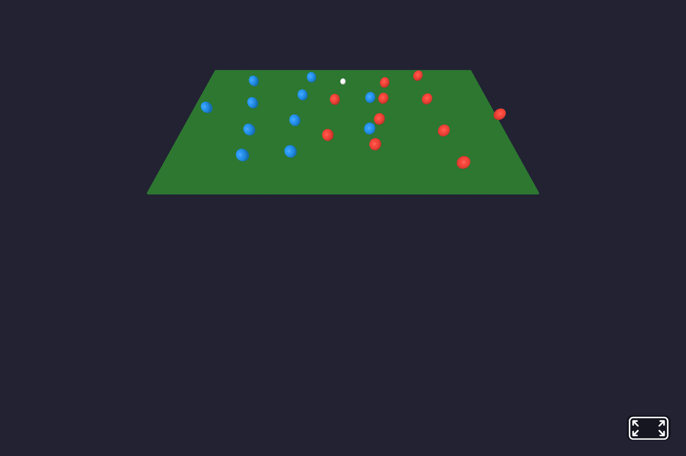
▲ 実行結果（Webブラウザ）：緑のフィールドに、青11・赤11・白1（ボール）の計23個が配置される
place(el, x, y) の2つ目に渡すのは、その行のフィールドの y。r の中のどれ？JavaScript loadCSV('soccer.csv').then(function (rows) { const first = []; for (let i = 0; i < rows.length; i++) { if (rows[i].frame === 0) { first.push(rows[i]); } } for (let i = 0; i < first.length; i++) { const r = first[i]; const el = document.createElement('a-sphere'); let radius = 0.35; if (r.team === 'ball') { radius = 0.2; } el.setAttribute('radius', radius); el.setAttribute('color', colorOf(r.team)); place(el, r.x, r.y); group.appendChild(el); } });
空欄1＝0、空欄2＝r.y。1つ目の for＋if で最初のコマの23件に絞り、2つ目の for で1件ずつ球にして置く。
「23件のデータ（1コマ）を空間にプロットした散布図」を作ったのと同じ。表の1行が1つの球になった＝データの可視化そのもの。
team-id をキーにして覚えておくsetInterval でコマ番号 f を1つずつ進め、そのコマの23件の位置を書きかえるbyFrame[f] ＝ f コマ目の23件）std3-4のHTMLの <script> 内、loadCSV(...).then(...) の中身を、下のアニメーション版に置きかえる（place・colorOf・loadCSV はそのまま使う）。
部品（空欄は2か所）
JavaScript loadCSV('soccer.csv').then(function (rows) { // (A) コマごとにデータを仕分ける： byFrame[f] = そのコマの23件 const byFrame = {}; let maxFrame = 0; // 最後のコマ番号(=5399)も同時に探す for (let i = 0; i < rows.length; i++) { const r = rows[i]; if (!byFrame[r.frame]) { byFrame[r.frame] = []; } // そのコマの入れ物がまだ無ければ作る byFrame[r.frame].push(r); // 同じコマ番号の所にためる if (r.frame > maxFrame) { maxFrame = r.frame; } } // (B) 23個の球を「1回だけ」作り、team-id をキーに覚える const ents = {}; const firstFrame = byFrame[0]; // 最初のコマの23件 for (let i = 0; i < firstFrame.length; i++) { const r = firstFrame[i]; const el = document.createElement('a-sphere'); let radius = 0.35; if (r.team === 'ball') { radius = 0.2; } el.setAttribute('radius', radius); el.setAttribute('color', colorOf(r.team)); group.appendChild(el); ents[r.team + '-' + r.id] = el; // 例: "home-7" → その球 } // (C) コマを順に進めて、位置を書きかえる（=アニメーション） let f = 0; setInterval(function () { const now = byFrame[f]; // 今のコマの23件 for (let i = 0; i < now.length; i++) { const r = now[i]; const el = ents[r.team + '-' + r.id]; place(el, r.x, r.y); // このコマの位置へ移動 } f = ____; // ★空欄1: 次のコマへ。最後まで行ったら0に戻す★ }, ____); // ★空欄2: 間隔ミリ秒（例 100）★ });
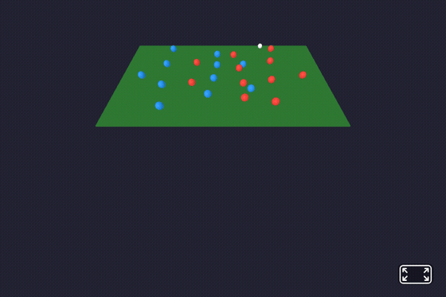
▲ 実行結果（アニメGIF）：全コマを再生し、選手（青・赤）とボール（白）がデータ通りに動き続ける
maxFrame）を超えたら 0 に戻したい。f を1つ増やしつつ、あまり（% 剰余）を使うと 0→…→最後→0 と1行で循環できるsetInterval の第2引数。小さいほど速い（まずは 100 くらいから試す）JavaScript let f = 0; setInterval(function () { const now = byFrame[f]; for (let i = 0; i < now.length; i++) { const r = now[i]; place(ents[r.team + '-' + r.id], r.x, r.y); } f = (f + 1) % (maxFrame + 1); // 0→1→…→5399→0 }, 100);
空欄1＝(f + 1) % (maxFrame + 1)、空欄2＝100。5400コマ（90分）を繰り返し再生し、動きがループする。間隔100msなら1周＝約9分。
50 にして倍速／300 にしてスロー再生radius を大きく・色を 'yellow' にして目立たせるrotation（今は -55）を -90 にすると真上からの戦術ビューになるloadCSV('soccer.csv') を loadCSV('soccer_25fps.csv') に変えるだけ。コマ数が25倍（135,000）に増えるので動きがぬるぬるに。実時間で再生するなら間隔を 40（＝1000÷25）にする.gltf（テキスト＋画像の複数ファイル）と .glb（すべてを1つにまとめたファイル）がある.glb（1ファイル）が扱いやすいのでおすすめSketchfab は3Dモデルの共有サイト。無料でダウンロードできるモデルも多い。
soccer ball）CC）。利用条件を守る.glb か .zip）.zip のときは解凍し、中の .glb ファイルを使う.glb を、index.html と同じフォルダに置く（例：model.glb）ダウンロードしたモデルには作者と利用条件（ライセンス）がある。授業の課題で使う範囲にとどめ、作者名の表示（クレジット）が必要なものは Notion に明記する。再配布・商用は条件をよく確認。
この資料のサンプルモデル sample_model.glb をダウンロード（あひるの3Dモデル／glTF公式サンプル）。まずはこれで下のコードを試し、あとで自分のモデルに差しかえてもよい。
モデルの読み込みも、ダブルクリック（file://）では動かないことがある。std3-4と同じく作業フォルダで python -m http.server 8000 を立て、http://localhost:8000/index.html で開く。
<a-gltf-model>）<a-gltf-model src="ファイル名"> を a-scene の中に置くだけ。位置は position で指定する。
HTML <!DOCTYPE html> <html> <head> <script src="https://aframe.io/releases/1.7.1/aframe.min.js"></script> </head> <body> <a-scene> <a-sky color="#223"></a-sky> <a-plane rotation="-90 0 0" width="30" height="30" color="#1a1a1a"></a-plane> <!-- glbモデルを読み込んで置く（同じフォルダの sample_model.glb） --> <a-gltf-model src="sample_model.glb" position="0 0 -4"></a-gltf-model> </a-scene> </body> </html>
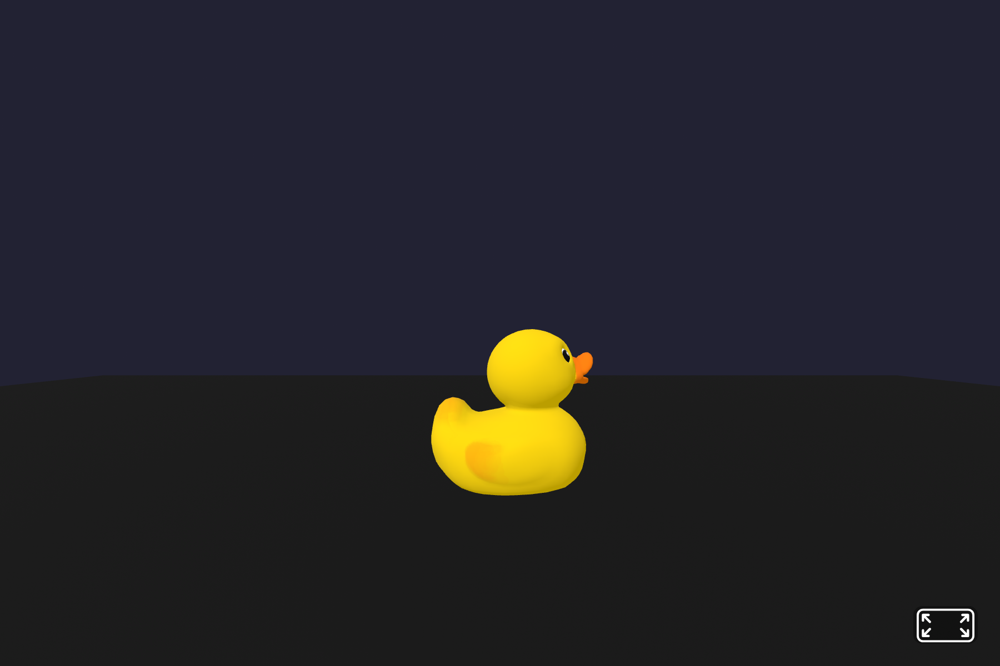
▲ 実行結果：sample_model.glb（あひる）がそのまま表示される
※ モデルが大きすぎ・小さすぎるとき、真っ黒で見えないときは、次の「表示②」で scale とライトを調整する。
a-assets）＋ 位置・大きさ・回転・ライトモデルを a-assets で先読みしておくと表示が安定する。scale（大きさ）・rotation（向き）・a-light（光）で見え方を整える。
HTML <a-scene> <!-- ① 先読み：id をつけて登録 --> <a-assets> <a-asset-item id="model" src="sample_model.glb"></a-asset-item> </a-assets> <a-sky color="#223"></a-sky> <a-plane rotation="-90 0 0" width="30" height="30" color="#1a1a1a"></a-plane> <!-- ② 光を足す（モデルが暗いとき明るくなる） --> <a-light type="ambient" color="#888"></a-light> <a-light type="point" intensity="1.2" position="2 4 2"></a-light> <!-- ③ 先読みしたモデルを #id で置く。大きさ・向きを調整 --> <a-gltf-model src="#model" position="0 0 -3.5" scale="1.5 1.5 1.5" rotation="0 -30 0"></a-gltf-model> </a-scene>
src="#model"＝先読みした a-asset-item の id を # で参照するscale="1.5 1.5 1.5"＝1.5倍に拡大（小さすぎるモデルはここを大きく）rotation="0 -30 0"＝y軸まわりに回して、こちらを向かせる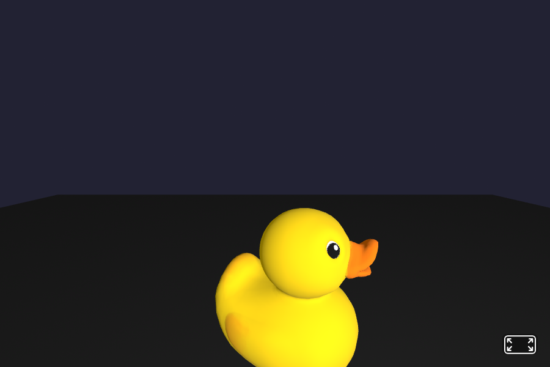
▲ 実行結果：拡大・回転し、ライトで明るくなったモデル
std3-4のフィールドの上にモデルを1つ置く。選手（球）と3Dモデルを組み合わせると、一気に「作品」らしくなる。白い球の代わりにボールのモデルを置くのもこの応用。
HTML <a-scene> <a-assets> <a-asset-item id="model" src="sample_model.glb"></a-asset-item> </a-assets> <a-sky color="#223"></a-sky> <!-- フィールド --> <a-box position="0 0 -6" width="14" height="0.1" depth="9" color="#2e7d32"></a-box> <a-light type="ambient" color="#999"></a-light> <a-light type="directional" intensity="0.8" position="1 3 1"></a-light> <!-- 3Dモデル＋選手（球） --> <a-gltf-model src="#model" position="0 0.1 -6" scale="1.6 1.6 1.6" rotation="0 -20 0"></a-gltf-model> <a-sphere position="-4 0.6 -5" radius="0.35" color="#2196f3"></a-sphere> <a-sphere position="4 0.6 -7" radius="0.35" color="#f44336"></a-sphere> <!-- 上から見おろすカメラ --> <a-entity position="0 5 0.5" rotation="-45 0 0"><a-camera></a-camera></a-entity> </a-scene>
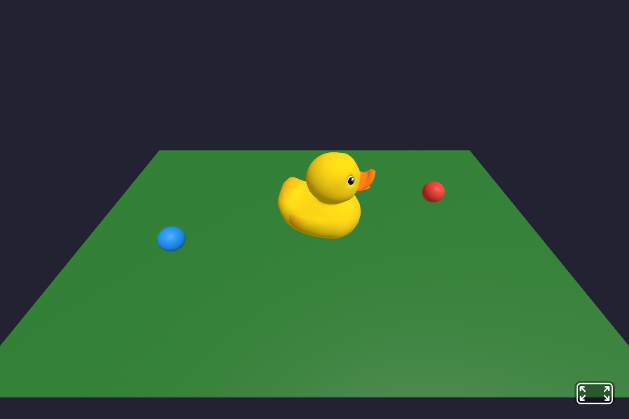
▲ 実行結果：フィールド上に3Dモデル＋選手（青・赤の球）
scale を 0.1 や 10 など大きく変えて探すposition の z をマイナスに（手前すぎ・奥すぎに注意）a-light（ambient / point / directional）を足すfile:// で開いていないか確認（python -m http.server 経由で開く）／ファイル名・場所が合っているか同じ soccer.csv を使って、std3-5をベースに「装飾で魅力的にする」or「分析の概念を入れて可視化する」方向で自由に発展させる。正解はなし。「何を見せたいか」を決めて作る。
方向A：装飾で魅力的にする
a-cylinder（人っぽく）や a-cone にする／背番号を a-text で頭上に表示a-ring・a-box で描く／芝の色をリアルに方向B：分析の概念を入れて可視化する
Math.sqrt((x1-x2)**2 + (y1-y2)**2)。全選手で計算し、最小の選手を選ぶxの合計 / 人数, yの合計 / 人数。チームの「かたまり」の動きが見える今日の「座標を読んで・動かして・可視化する」の本格版が、大学の講座で公開されている。ウプサラ大学（スウェーデン）の David Sumpter 教授による、サッカーを数理モデルで分析する講座の1ページ：
▶ Uppsala University ─ Player movements on the pitch
ここで何をやっているか（＝そのまま発展課題のヒント）：
※ 英語だが、図やコードを眺めるだけでも「方向B（分析）」のアイデアがたくさん見つかる。真似できそうな指標を1つ選んで、今日の soccer.csv で作ってみよう。
ウプサラ大学の例と同じように、本物のサッカーのトラッキングデータ（Metrica Sports が公開する Sample Game 1・約90分・25fps・実試合）を Python（pandas + matplotlib）で分析した結果。特に注目：ホーム／アウェイが「フィールドのどこをよく使ったか」のヒートマップ（下の 1・2）。今日 soccer.csv で学んだ読み方が、そのまま本物にも通用する。
分析スクリプト metrica_analysis.py をダウンロードし、Metrica の公開データを同じフォルダに置いて実行する：
Terminal # ① Metricaの公開サンプルデータを取得 B=https://raw.githubusercontent.com/metrica-sports/sample-data/master/data/Sample_Game_1 curl -L "$B/Sample_Game_1_RawTrackingData_Home_Team.csv" -o home.csv curl -L "$B/Sample_Game_1_RawTrackingData_Away_Team.csv" -o away.csv # ② ライブラリを入れて実行 uv pip install pandas matplotlib python metrica_analysis.py # anal_01.png 〜 anal_10.png が出力される
ヒートマップの中心となるコード（＝位置をマス目で数えて色にする）
Python import numpy as np, matplotlib.pyplot as plt # Metricaデータを読み込み→メートルに変換→縦持ちにした表（読み込み処理は metrica_analysis.py） df = load_metrica() home = df[df['team'] == 'home'] # ホームだけ抽出 # 位置を2次元ヒストグラムにする（＝フィールドをマス目に区切って数える） H, _, _ = np.histogram2d(home['x'], home['y'], bins=[42, 28], range=[[-52.5, 52.5], [-34, 34]]) plt.imshow(H.T, origin='lower', extent=[-52.5, 52.5, -34, 34], cmap='YlOrRd') # よく使ったマスほど濃い色に plt.savefig('home_heatmap.png')
※ 上は要点だけ。Metricaデータの読み込み（0〜1座標→メートル変換、後半の向きそろえ）や、緑のピッチを描く draw_pitch() を含む全コードは metrica_analysis.py にある。
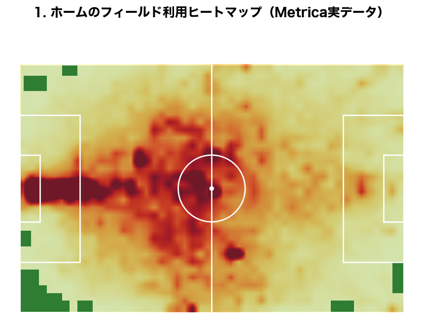
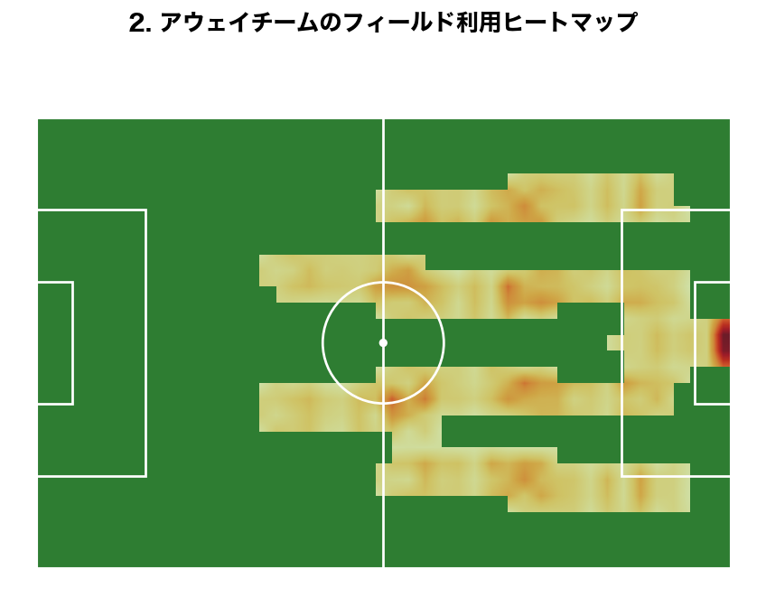
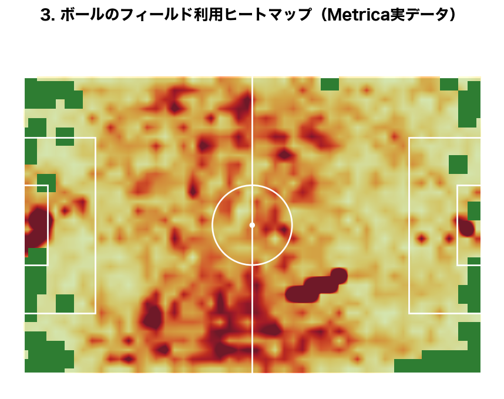
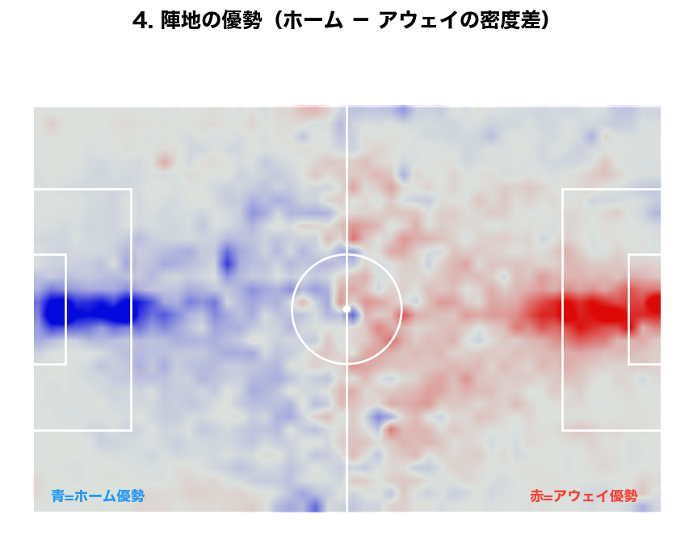
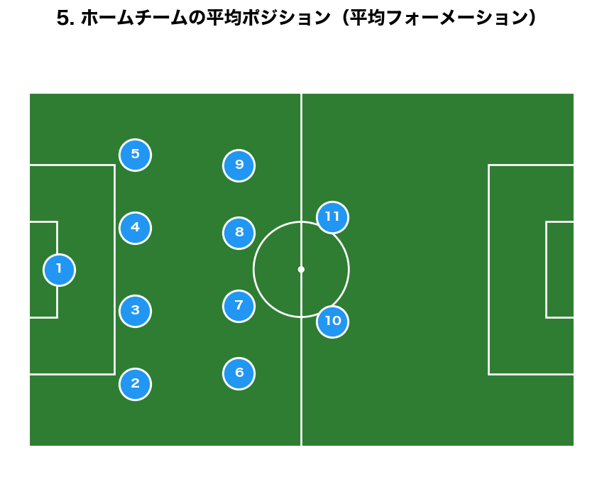
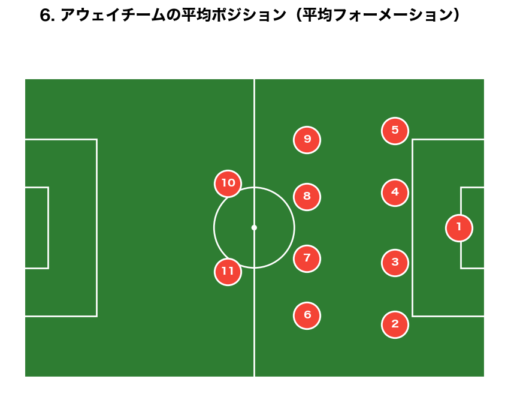
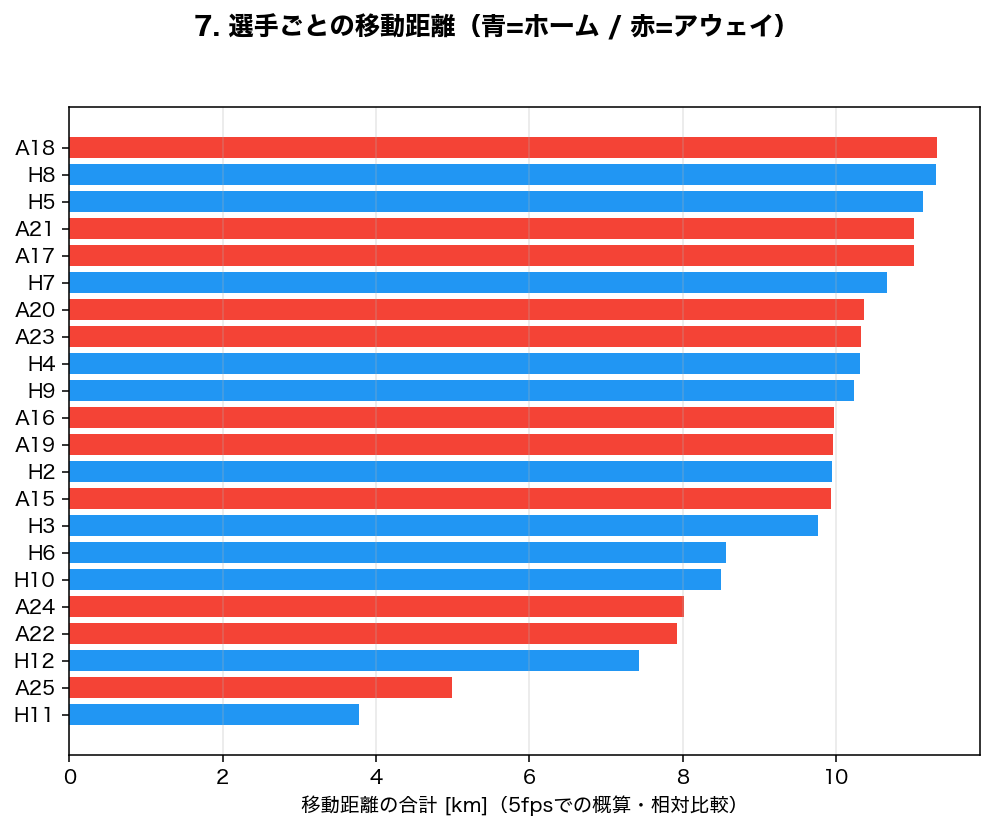
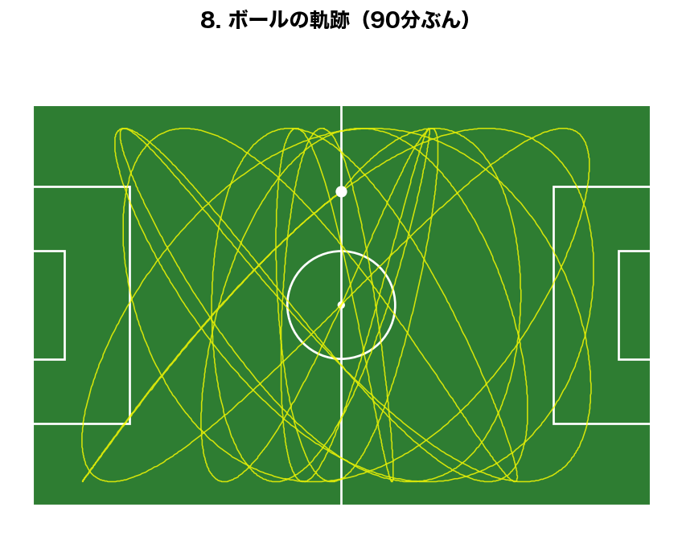
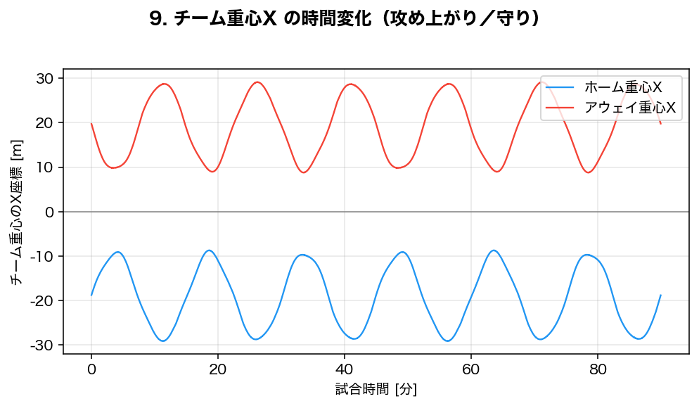
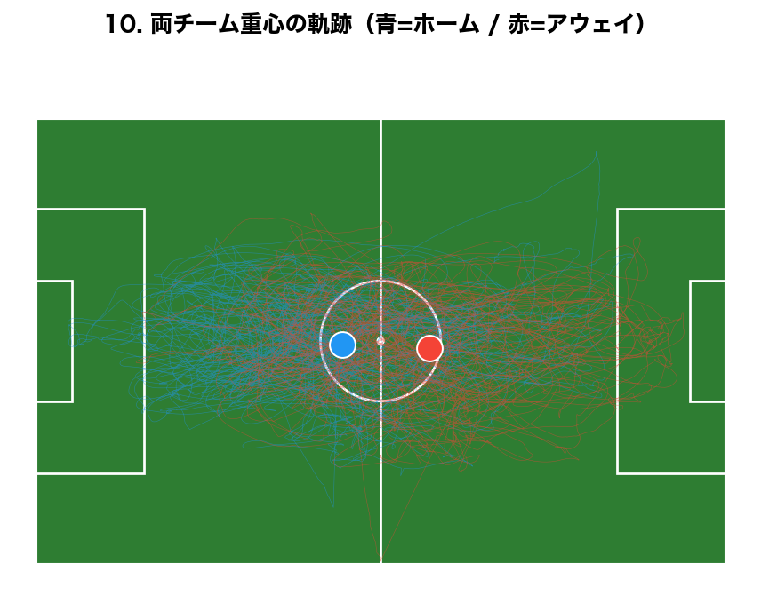
soccer.csv で覚えた「読み込む → 抽出する → histogram2d で数える」手順が、そのまま本物に通用するこんな仕上がりを目指すイメージ（参考）。まずは真似から入ってOK。
▶ https://drive.google.com/file/d/1jDAz2bo-WGJ4YtV3nFNmGLqTPF3_uw12/view?usp=sharing